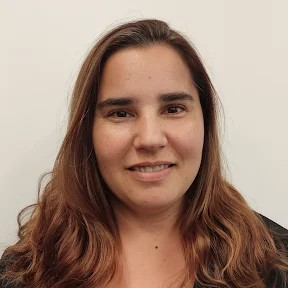

Volando hacia
los sueños
Volar hacia los sueños es dificil cuando la persona que se elige
para compartir tu vida no te apoya, pero eso cambio y ahora mis
sueños estan listos para volar y poder ser alcanzados.

Mis Datos
Macarena Osses Vargas
Las Malvas 590-505, Las Condes
Santiago - Chile
(09) 7649 2250
maka.osses@gmail.com
<<<<<<< HEAD

Macarena Osses Vargas
Las Malvas 590-505, Las Condes
Santiago - Chile
(09) 7649 2250
maka.osses@gmail.com
Resumen
Ingeniero Civil Informático – Universidad Diego Portales con 13 años de
experiencia, de los cuales 5 años han sido como desarrollador de programas
(C, C++ y Cobol) y 8 años como Quality Assurance (QA) y optimización de
procesos. Capacidad de adaptación y organización. Colaborativa y dispuesta
a enfrentar nuevos retos.
Experiencia Profesional
TAPP |
Santiago |
Enero 2023 - Hoy dia |
Analista QA
- Diseño y rediseño de casos de pruebas.
- Ejecución de casos de pruebas.
- Creación de informes
- Soporte
|
Tecnova |
Santiago |
Diciembre 2021 - Diciembre 2022 |
QA
- Proyecto TAPP
- Ejecución de casos de pruebas.
- Diseño y rediseño de casos de pruebas.
|
Magnet |
Santiago |
Noviembre 2020 - Noviembre 2021 |
QA
- Proyecto ProChile
- Ejecución de casos de pruebas.
- Diseño y rediseño de casos de pruebas.
- Proyecto RNE
- Ejecución de casos de pruebas.
- Diseño y rediseño de casos de pruebas.
- Recepción de Fedback
- Actualización de documentación
|
Kibernum |
Santiago |
Febrero 2015 – Octubre 2016 |
Tester (Citigroup)
-
Participa en el Proyecto ERT, a cargo de la ejecución de los
procesos para determinar los errores antes de la entrada en
productivo, generando reportes de ejecución y control.
-
Gestiona el Proyecto ASP & RCO (proyectos de Mainframe), a cargo
de los Análisis y Testing, liderando el equipo que apoya las
siguientes funciones:
- Diseño y rediseño de casos de pruebas.
- Análisis de documentos y datos para la ejecución
- Ejecución de casos de pruebas.
-
Lidera el Proyecto SG, a cargo de los Análisis y Testing, lidera
equipos de apoyo para la ejecución de reportes, organizando el
desarrollo del proyecto, diseño y rediseño de casos de pruebas,
análisis de documentos y datos para la ejecución y ejecución de
casos de pruebas.
|
Kibernum |
Santiago |
Noviembre 2013 – Diciembre 2014 |
Tester (Citigroup)
-
Colabora en el Proyecto BAU (Centro América, Argentina, Perú y
Colombia)
-
A cargo de Centro América y Argentina con un equipo responsable
de:
- Realización de reportes
- Organización de desarrollo del proyecto
- Ejecución de casos de pruebas.
- Diseño y rediseño de casos de pruebas.
-
Participa en el Proyecto Citimanager, Brasil, en este proyecto se
cumplió con la ejecución y resolución de casos de pruebas.
|
Practia Consulting |
Santiago |
Abril 2012 - Octubre 2013 |
Quality Assurance (QA)
-
Proyectos en Sodimac “Retiro en Tienda” y “Diferencia Precios
UXPOS DTE RIDEAS”, responsable de la ejecución de casos de
pruebas.
-
Proyecto Sodimac “Portal de Pagos”, responsable del diseño y
rediseño de casos de pruebas.
-
Proyecto Cencosud “Comprar Mejor”, “Vista Paris” y “EASY”, en
estos proyectos se cumplió con la siguiente función:
-
Aseguramiento de calidad, auditando la existencia y contenido de
los documentos de pruebas realizadas por cada etapa del
proyecto, tales como: Plan de prueba, Diseño de pruebas
(Unitarias, usuario, integradas y sistema) Checklist de
ambientes. Certificación QC en Programa Microstrategy.
-
Lidera Proyecto Cencosud “TOC”, en este proyecto se realizó la
ejecución, diseño y rediseño de casos de pruebas, generación de
datos para las pruebas y levantamiento de Incidencias.
-
Proyecto Cencosud “Seguros Cencosud”, responsable del diseño de
casos de pruebas.
-
Proyecto Cencosud “Nueva Paris”, en este proyecto se ejecutaron
los casos de pruebas.
|
Experian Services Chile |
Santiago |
Abril 2007 - Febrero 2012 |
Desarrollador
- Desarrollo de programas en C, C++, JCL, COBOL.
- Conocimiento del Sistema IBM (MAINFRAME, ENDEVOR)
- Manejo de proyectos
- BK7, integrar nueva ley de bancarrotas al sistema.
-
Smart Purge, eliminación de la base de datos de datos caducados.
-
Aqua Purge, eliminación de la base de datos de datos caducados.
- ARM, Transferencia de datos entre bases de datos.
-
Mantención de sistemas, se verificaba que estos procesos se
ejecutaran correctamente, corrigiendo los errores y verificando
actualizaciones de nuevas tecnologías.
- Name Parse
- Access Methods
|
GST |
Santiago |
Agosto 2006 – Abril 2007 |
Analista QA
-
Certificación de QA, calidad de software, revisión de la Base de
Datos, para el mejor funcionamiento de esta.
Desarrollador
- Desarrollo de programas en COBOL, JCL.
-
Conocimiento del Sistema IBM (CHANGEMAN, HOST, MODEL OFFICE,
SMARTEST, CONTROL-M)
|
Educacion
| Universidad Diego Portales, Santiago, 1997 - 2005 |
| Ingeniero Civil Informático. Titulado con Distinción. |
|
Colegio San Juan Evanjelista, Santiago, 1981 - 1996
|
Cursos
- English Course
-
Institution Global Village, Vancouver, Canada, January – May 2006
-
Institution ACPEN Academy, Santiago, Chile, July, 2006 – January 2007
Otros
- Computación
- Manejo avanzado de Windows y Microsoft Office.
-
Manejo intermedio de Visual Basic, C++, Java, SQLServer, COBOL,
Sistema IBM.
- Manejo básico de Java.
- Quality Center, Tectia.
- Jira
- Hobbies
Portfolio